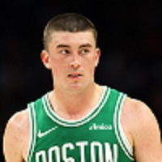
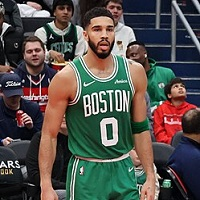

🏆Titulos na NBA
18 títulos conquistados na história da franquia.
Fundado em 1946
O nome "Celtics" e o mascote Lucky the Leprechaun foram escolhidos especificamente para homenagear a enorme comunidade de imigrantes irlandeses em Boston.
O maior de todos os tempos
Jogadores escalados para a Season 26-27, nessa pagina você verá quais as estatísticas dos principais jogadores do Boston Celtics.


18 títulos conquistados na história da franquia.
Bill Russell conquistou 11 titulos da NBA pelo celtics
O Celtics é uma das franquias mais tradicionais do esporte
A equipe teve um período de grande domínio durante as décadas de 1950 e 1960